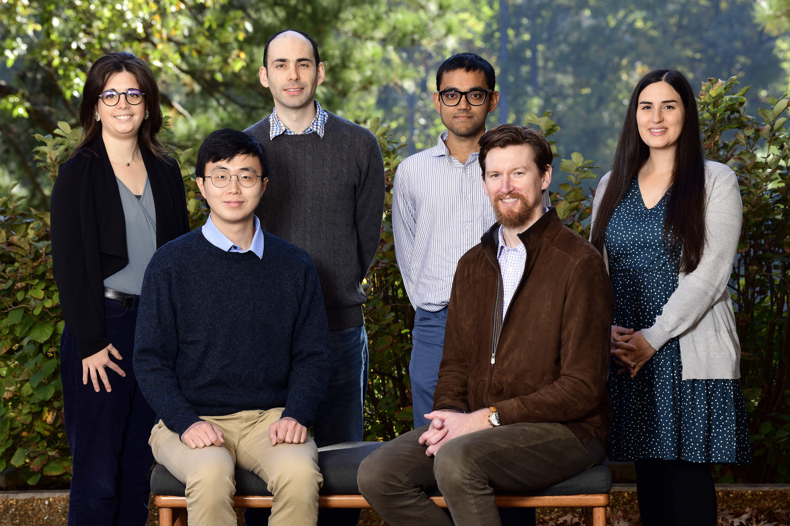
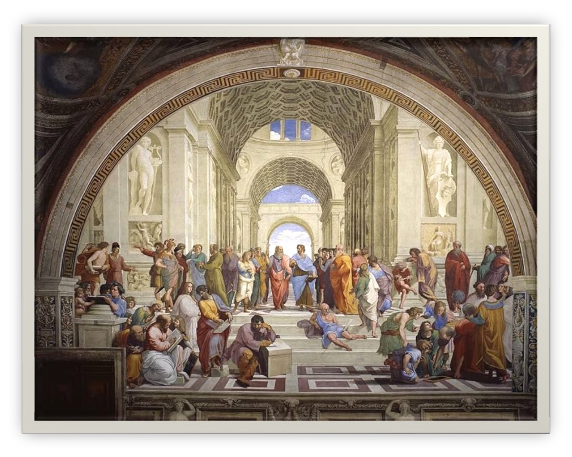

Spatiotemporal Exposure and Toxicology {SET} Group
2024 Tenure Track Advisory Committee Meeting
Overview
About Us
Spatiotemporal Exposures and Toxicology {SET} group
- Geospatial Exposure Mapping: Spatiotemporal exposure mapping of environmental and climate variables (e.g. chemical mixtures, social, behaviorial, environmental, and climate factors)
- GeoTox: Otherwise known as source to outcome continuum modeling, GeoTox is the integration of geospatial exposures, toxicokinetic modeling, and non-animal toxicological data such as high-through in vitro screen assays to develop mechanistically-informed risk maps of chemical mixtures
- Software Development: Developing and promoting software and computational best-practices such as test driven development (TDD) and open-source code for the environmental health sciences
About Us

CHORDS Project
- I am a co-lead on the CHORDS project with Aubrey Miller, Charles Schmitt, and Trisha Castranio.
- David Reif, Alison Motsigner-Reif, David Fargo, among many others involved a regular contributors
- The project represents a major NIEHS initiative for climate change and health research that I am involved in. It has come with additional monies for postdocs and data analysts in my group
- It also comes with significant time commitments and responsibilities
- A lot of the CHORDS work/deliverables are folded into my group’s work and manuscripts
Group Management
- In late 2023/ early 2024, with help from the new CHORDS funding, my group was poised to expand from 2 postdocs to 5 postdocs and a data analyst.
- I took 30 hours of project management courses to prepare
- I adopted software best practices as both a technique to help manage the group and to improve the quality of our software products, as well as increase software as a product of our research group
- Software best practices will help ensure that I have knowledge retention, reproducibility, and extensibility built into the core of my group
- You’ll see why this is important in the next few slides
Software and Computational Best Practices
- Test Driven Development
- Continuous Integration
- Build Checks
- Style/Linting
- Workflows/Pipelines

Group Personnel Updates
Daniel Zilber
- Postdoc with me ~2.5 years
- 1 first/last author publication (Zilber and Messier, 2024)
- 1 first/second author publication (me 2nd, Matt Wheeler last) in major revisions
- 1 last/second (me last, Daniel 2nd) in press
- Daniel is now a staff scientist with Shanshan Zhao as of July 7, 2024 (BCBB)
- Overall, Daniel has been an excellent postdoc and demonstrated how providing flexibility and intellectual freedom can lead to high-impact research
Ranadeep Daw
- Postdoc with me 1 year
- 0 publications or products. 1 manuscript in progress, but not holding my breath for seeing it completed
- Overall, disappointing, not meeting expectations, and negative attitude
- Complained about data set being too large for the proposed methodology, then complained about it being too small
- Nonetheless, a positive outcome as he accepted a position as a tenure-track assistant professor in Statistics at the University of West Florida
Insang Song
- Postdoc with me 1 year and as a contractor for 4 months before that
- 1st author publication in NIEHS internal review (
chopinsoftware manuscript). - 1st author publication (
beethovengroup project) in preparation. - 2nd author on
PrestoGPmanuscript in preparation - Recent Big News He has been offered and accepted a tenure-track assistant professor position at Seoul National University (Top Public University in Korea- Top 30-50 Worldwide). It is a great opportunity for him for a highly competitive position. A bit bittersweet for me because he has been an amazing postdoc and extremely productive.
- Start date is surprisingly soon, Sept 1 2024.
Eva Marques
- Postdoc with me 1 year
- Excellent group member and attitude
- Project on high-resolution heat exposure mapping is going well
- 2 first author publications in progress. 1 first author publication in 2025 is realistic.
Mariana Alifa Kassien
- Postdoc with me 1 year
- Excellent group member and positive attiude
- Project goal is to develop a geospatial of 100+ VOCs in air.
- The methodology has changed from a physics-informed neural network to something more tractable that builds upon our previous spatial models and pipeline developments.
- Additionally, we hope to integrate this into the GeoTox framework towards a geospatial mixtures risk assessment.
- Spends 10-20% of her time working with the CHORDS knowledge dissemination team and has some interest science communication and outreach.
- Was on maternity leave from Mar - May 2024.
Mitchell Manware
- With me 1 year as a fully-remote data analyst supported by the CHORDS project.
- Has been a great team member contributing to
amadeusandbeethovensoftware as well as leading the first-author for theamadeusmanuscript (currently under internal NIEHS review). - He is interested in doing a PhD with the goal of learning and developing ML/AI models for environmental exposure and risk assessment, but has a likely geographical constraint of New England. Will discuss the possibility of supporting a PhD at UNC ESE.
Postbac Outcomes
Taylor Potter, BS, IRTA Postbac 2020-2022, now in MD program at Meherry Medical College
Melissa Lowe, BS, MS, IRTA Postbac 2020-2022, 1st author publication, Biostatistician at Duke Cancer Center, Recently resigned to purse a JD and focus on environmental justice, I wrote her a recomomendation letter for law school.
Postdoc Outcomes
Dr. Kristin Eccles - Research Scientist, Computational Toxicology Research group, Exposure and Biomonitoring Division, Health Canada
Dr. Ranadeep Daw - Tenure Track Assistant Professor, Department of Mathematics and Statistics, University of West Florida
Dr. Daniel Zilber - Staff Scientist, BCBB, NIEHS
Dr. Insang Song - Tenure Track Assistant Professor, Seoul National University
Summer Intern Outcomes
Alvin Sheng, PhD candidate, SIP 2021, NCSU Department of Statistics (Advisor: Brian Reich), Project manuscript is now in press in American Journal of Epidemiology, Included as 3rd chapter in dissertation.
Jennifer Kampe, PhD candidate, SIP 2024, Duke Department of Statistics (Advisor: David Dunson), Project is on the development of a Bayesian latent variable model for chemical mixture prediction. She is hoping it can be incorporated into her dissertation.
Project Updates
PrestoGP
PrestoGPand the application on US-wide groundwater pesticides is proceeding with steady progress. The publication is in preparation, but we are unlikely to get it done in 2024. Nonetheless, I am still excited at this development and the potential for a high-impact publication in late 2024 or 2025.Jump over to
PrestoGPGitHub repo and website: https://niehs.github.io/PrestoGP/
beethoven SET Group Project
- Goal: Develop an air pollution model for the last 5 years that is updated bi-annually
- Entire SET group, Cavin Ward-Caviness, Lara Clark, Anisha Singh
- Test-Driven Development
- GitHub with strict rules
- Targets make-like pipeline
- Fine spatial and temporal resolution
- Post-processing for aggregated spatial and temporal resolutions
beethoven pipeline overview

beethoven pipeline implementation

beethoven targets pipeline

GeoTox package development
- Working with David Reif and Skylar Marvel to develop the GeoTox framework into an open-source, extensible, R-package.
- Manuscript in preparation for special issue in Human Genomics. Expect to have draft in the next month or two.
- Incorporating multi-assay chemical risk characterization
GeoTox package development

Summary and Looking Forward
SET Software

2024
- 2023/2024 was spent doing lots of logistical work and project management
- On-boarding of a large group and setting up projects
- TDD and software development practices has helped ensure that we are building robust and reproducible software and that I can trust what are large team is doing without having to micromanage
- Some publications such as
PrestoGPwere not finished, but steady progress is being made and I am optimistic about the potential for high-impact publications in 2025
2025
- Analytical pipelines and tools have been developed, which should make my life easier and more productive
- I am excited about the potential for high-impact publications in 2025
- BSC preparation is starting
- The two
GeoToxmanuscript (POY and package development) will considered as publications to highlight PrestoGPandbeethovenwill be good to highlight as current and future progress- Good trainee outcomes will be highlighted
- Climate and health research (AJE pub, CHORDS)
- Software development and open science (GeoTox, PrestoGP, beethoven)
- The two
Hiring
- I have base funding for 2 postdocs (replacing Daniel Zilber and Ranadeep Daw)
- I have options through CHORDS to hire data analysts and utilize SOARS (Replacing Insang Song)
- I have options through PTB, perhaps combined with SET group CAN, to support a PhD student